← До переліку лабораторних робіт
Лабораторна робота №3. Циклічні обчислювальні процеси
Варіант 19. Виконав: Одарчук Олексій, КНУ імені Тараса Шевченка, ФІТ, група ІПЗ-11. C17, gcc
1. Мета роботи
- Вивчити особливості циклічних обчислювальних процесів.
- Опанувати технологію використання операторів циклів.
- Навчитися розробляти алгоритми та програми циклічних процесів.
2. Умова задачі
Обчислити суму ряду (таблиця 3.1, варіант 19):
5 ∞ (-1)^k · x^k Σ Σ ───────────────────── x=1 k=0 (k + 2)³ · √k
Вимоги методичних вказівок до реалізації:
- зовнішню суму з параметром від 1 до 5 обчислювати циклом
for; -
внутрішню суму з параметром від 0 до нескінченності - циклом
whileабоdo...while; - точність розрахунку поточного елемента ряду задає користувач; підсумовування припиняється при її досягненні;
- кількість доданків внутрішньої суми для кожного параметра зовнішньої має бути різною;
- розрахунок степеня виконувати за рекурентними співвідношеннями;
- для запобігання переповненню виходити з внутрішнього циклу при досягненні елементом ряду значень 10⁻³⁸ або 10⁺³⁸;
- результат подати таблицею з чотирьох колонок: параметри зовнішньої та внутрішньої сум, значення члена ряду, накопичувана сума.
3. Аналіз задачі та теоретичне обґрунтування
Нижня межа внутрішньої суми
При k = 0 знаменник містить множник √0 = 0, тобто елемент ряду
не визначений. Тому підсумовування починається з k = 1; програма повідомляє
про це під час запуску.
Збіжність ряду
Модуль елемента ряду поводиться як x^k / k^3,5. Показникова функція
x^k зростає швидше за будь-який степінь k, тому:
-
при
x = 1ряд є знакозмінним із монотонно спадними за модулем членами - за ознакою Лейбніца збігається; -
при
x = 2, 3, 4, 5члени ряду за модулем необмежено зростають - необхідна ознака збіжності не виконується, ряд розбігається.
Тому потрібен контроль переповнення: внутрішній цикл припиняється, коли елемент перевищує
10⁺³⁸, і програма повідомляє причину зупинки для кожного x.
Рекурентне співвідношення
Щоб не обчислювати степінь x^k і знак (-1)^k на кожній ітерації, елемент ряду виражається через попередній:
a(k) = (-1)^k · x^k / ((k+2)³ · √k) a(k+1) (k+2)³ · √k ──────── = -x · ───────────────── a(k) (k+3)³ · √(k+1)
Перший доданок обчислюється явно, оскільки рекурентний перехід від k = 0
неможливий:
a(1) = (-1)¹ · x¹ / (3³ · √1) = -x / 27
Вибір операторів циклу
Зовнішній цикл - for: кількість повторень відома (5). Внутрішній -
do...while: кількість доданків наперед невідома, а перший доданок додається
завжди. Умови припинення перевіряються до обчислення наступного елемента, щоб зберегти
причину зупинки.
Література: Ковалюк Т.В. Алгоритмізація та програмування. - Львів.: "Магнолія 2006", 2024. - 400 с.; Deitel P., Deitel H. C++ How to Program. Pearson Education, Inc. Hoboken, New Jersey. 2017. - 3015 p.
4. Блок-схема алгоритму
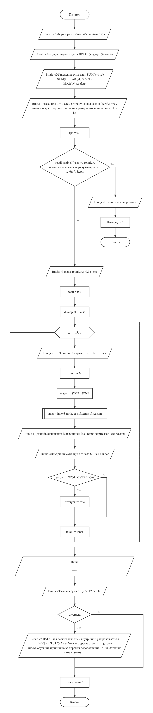
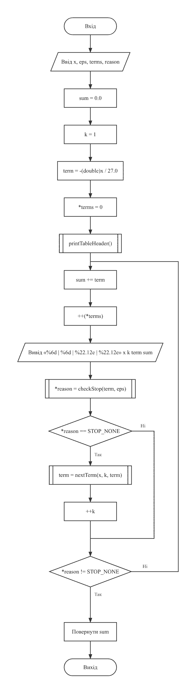
Схеми побудовано з текстів програм за допомогою rombik (rombik.app) відповідно до ДСТУ 19.701-90 (ISO 5807).
5. Текст програми
task1.c
/*==============================================================================
Лабораторна робота №3. Варіант 19.
Тема: циклічні обчислювальні процеси.
Умова (таблиця 3.1, варіант 19): обчислити суму ряду
5 inf (-1)^k * x^k
SUM SUM ---------------------
x=1 k=0 (k + 2)^3 * sqrt(k)
Вимоги методичних вказівок до реалізації:
- зовнішню суму (параметр 1..5) обчислювати циклом for;
- внутрішню суму (параметр від 0 до нескінченності) - циклом while
або do...while;
- точність обчислення поточного елемента ряду задає користувач;
- підсумовування припиняється при досягненні заданої точності;
- степінь обчислювати за рекурентним співвідношенням (без pow());
- для запобігання переповненню виходити з внутрішнього циклу при
досягненні поточним елементом ряду значень 1e-38 або 1e+38;
- результат подати таблицею з чотирьох колонок.
Нижня межа внутрішньої суми: при k = 0 знаменник містить множник
sqrt(0) = 0, тобто елемент ряду не визначений, тому підсумовування
починається з k = 1.
Збіжність: модуль елемента ряду поводиться як x^k / k^3.5, тому ряд
збігається лише при |x| <= 1. Для x = 2, 3, 4, 5 елементи необмежено
зростають, і внутрішній цикл припиняється за порогом переповнення 1e+38.
Виконав: Одарчук Олексій, КНУ імені Тараса Шевченка, ФІТ, група ІПЗ-11.
Компілятор: gcc -std=c17
==============================================================================*/
#include <stdio.h>
#include <stdbool.h>
#include <math.h>
/* Межі контролю переповнення комірки пам'яті, задані умовою варіанта. */
const double OVERFLOW_LIMIT = 1e+38;
const double UNDERFLOW_LIMIT = 1e-38;
/* Причина припинення внутрішнього циклу. У мові C ім'я переліку саме по собі
не є іменем типу, тому оголошення загорнуто в typedef. */
typedef enum
{
STOP_NONE, /* підсумовування триває */
STOP_PRECISION, /* досягнуто заданої точності - ряд збігся */
STOP_OVERFLOW, /* елемент перевищив 1e+38 - ряд розбігається */
STOP_UNDERFLOW /* елемент став меншим за 1e-38 - машинний нуль */
} StopReason;
/*------------------------------------------------------------------------------
utf8Width - ширина рядка в символах, а не в байтах.
У кодуванні UTF-8 кирилична літера займає два байти, тому специфікатор
формату виду %-16s, який рахує байти, вирівнює заголовки таблиць
неправильно. Функція рахує лише початкові байти символів: у продовжувальних
байтах старші біти дорівнюють 10 у двійковій системі.
Параметри: s [вхідний] - рядок у кодуванні UTF-8.
Повертає : кількість символів рядка.
------------------------------------------------------------------------------*/
int utf8Width(const char *s)
{
int width = 0;
for (const unsigned char *p = (const unsigned char *)s; *p != '\0'; ++p)
{
/* Продовжувальний байт UTF-8 має вигляд 10xxxxxx: маска 0xC0 лишає
два старші біти, і якщо вони не дорівнюють 10, це початок символу. */
if ((*p & 0xC0) != 0x80)
{
++width;
}
}
return width;
}
/*------------------------------------------------------------------------------
printPadded - вивести рядок, доповнивши його пропусками до заданої ширини.
Параметри:
s [вхідний] - рядок, що виводиться;
width [вхідний] - потрібна ширина поля в символах;
left [вхідний] - true: вирівнювання ліворуч; false: праворуч.
Локальні змінні:
pad - кількість пропусків, які треба додати.
------------------------------------------------------------------------------*/
void printPadded(const char *s, int width, bool left)
{
const int pad = width - utf8Width(s);
if (!left)
{
for (int i = 0; i < pad; ++i)
{
putchar(' ');
}
}
printf("%s", s);
if (left)
{
for (int i = 0; i < pad; ++i)
{
putchar(' ');
}
}
}
/*------------------------------------------------------------------------------
stopReasonText - текстовий опис причини припинення підсумовування.
Параметри: reason [вхідний] - код причини.
Повертає : рядок-константу з поясненням.
------------------------------------------------------------------------------*/
const char *stopReasonText(StopReason reason)
{
switch (reason)
{
case STOP_NONE:
return "підсумовування не завершено";
case STOP_PRECISION:
return "досягнуто заданої точності (ряд збігся)";
case STOP_OVERFLOW:
return "елемент ряду перевищив 1e+38 (ряд розбігається)";
case STOP_UNDERFLOW:
return "елемент ряду став меншим за 1e-38";
}
return "невідома причина";
}
/*------------------------------------------------------------------------------
printTableHeader - вивести заголовок таблиці з чотирьох колонок: параметри
зовнішньої та внутрішньої сум, член ряду, накопичена сума.
------------------------------------------------------------------------------*/
void printTableHeader(void)
{
printf(" ");
printPadded("x", 6, false);
printf(" | ");
printPadded("k", 6, false);
printf(" | ");
printPadded("елемент ряду a(k)", 22, false);
printf(" | ");
printPadded("накопичена сума", 22, false);
printf("\n");
printf(" -------+--------+------------------------+------------------------\n");
}
/*------------------------------------------------------------------------------
nextTerm - обчислити наступний елемент ряду a(k+1) за попереднім a(k).
Використане рекурентне співвідношення. Елемент ряду
a(k) = (-1)^k * x^k / ((k+2)^3 * sqrt(k))
виражається через попередній, тож степінь x^k і знак (-1)^k не
обчислюються наново:
a(k+1) (k+2)^3 * sqrt(k)
------ = -x * -------------------
a(k) (k+3)^3 * sqrt(k+1)
Параметри:
x [вхідний] - параметр зовнішньої суми;
k [вхідний] - номер поточного елемента;
term [вхідний] - значення поточного елемента a(k).
Повертає : значення a(k+1).
Локальні змінні:
kd - номер елемента у дійсному вигляді (для формул).
------------------------------------------------------------------------------*/
double nextTerm(int x, int k, double term)
{
const double kd = (double)k;
const double numerator = (kd + 2.0) * (kd + 2.0) * (kd + 2.0) * sqrt(kd);
const double denominator = (kd + 3.0) * (kd + 3.0) * (kd + 3.0) * sqrt(kd + 1.0);
return term * (-(double)x * numerator / denominator);
}
/*------------------------------------------------------------------------------
checkStop - визначити, чи треба припинити підсумовування після елемента term.
Точність перевіряється першою: за eps > 1e-38 елемент, менший за 1e-38,
менший і за eps, тож підсумовування коректно завершується за точністю.
Поріг машинного нуля спрацьовує лише тоді, коли задано eps < 1e-38.
Параметри:
term [вхідний] - значення останнього доданого елемента;
eps [вхідний] - задана точність.
Повертає : причину припинення або STOP_NONE, якщо підсумовування триває.
------------------------------------------------------------------------------*/
StopReason checkStop(double term, double eps)
{
if (fabs(term) < eps)
{
return STOP_PRECISION;
}
if (fabs(term) > OVERFLOW_LIMIT)
{
return STOP_OVERFLOW;
}
if (fabs(term) < UNDERFLOW_LIMIT)
{
return STOP_UNDERFLOW;
}
return STOP_NONE;
}
/*------------------------------------------------------------------------------
innerSum - обчислити внутрішню суму ряду для заданого параметра x і вивести
таблицю її елементів.
Перший доданок a(1) = -x / (3^3 * sqrt(1)) = -x/27 обчислюється явно,
оскільки рекурентний перехід від k = 0 неможливий (a(0) не визначено).
Кожен наступний обчислює функція nextTerm(), умову припинення перевіряє
функція checkStop().
Параметри:
x [вхідний] - параметр зовнішньої суми (1..5);
eps [вхідний] - задана користувачем точність;
terms [вихідний] - адреса лічильника обчислених доданків;
reason [вихідний] - адреса коду причини припинення циклу.
Повертає: значення внутрішньої суми.
Локальні змінні:
sum - накопичувана сума ряду;
term - значення поточного елемента ряду a(k);
k - номер поточного елемента ряду.
------------------------------------------------------------------------------*/
double innerSum(int x, double eps, int *terms, StopReason *reason)
{
double sum = 0.0;
int k = 1;
double term = -(double)x / 27.0; /* a(1) = -x / (1+2)^3 / sqrt(1) */
*terms = 0;
printTableHeader();
/* Цикл з постумовою: перший доданок додається обов'язково, а кількість
доданків наперед невідома. */
do
{
sum += term;
++(*terms);
printf(" %6d | %6d | %22.12e | %22.12e\n", x, k, term, sum);
/* Умова припинення перевіряється до обчислення наступного елемента,
щоб не втратити причину зупинки. */
*reason = checkStop(term, eps);
if (*reason == STOP_NONE)
{
term = nextTerm(x, k, term);
++k;
}
} while (*reason == STOP_NONE);
return sum;
}
/*------------------------------------------------------------------------------
skipLine - відкинути залишок рядка введення разом із символом '\n'.
------------------------------------------------------------------------------*/
void skipLine(void)
{
int c = getchar();
while (c != '\n' && c != EOF)
{
c = getchar();
}
}
/*------------------------------------------------------------------------------
readPositive - прочитати додатне дійсне число з контролем введення.
Параметри:
prompt [вхідний] - текст запрошення;
value [вихідний] - адреса змінної для введеного числа.
Повертає : true - число прочитано; false - вхідні дані вичерпано.
------------------------------------------------------------------------------*/
bool readPositive(const char *prompt, double *value)
{
for (;;)
{
printf("%s", prompt);
const int scanned = scanf("%lf", value);
if (scanned == EOF)
{
return false;
}
skipLine();
if (scanned == 1 && *value > 0.0)
{
return true;
}
printf("Помилка: потрібне додатне дійсне число.\n");
}
}
/*------------------------------------------------------------------------------
Головна функція. Читає точність обчислень, обчислює зовнішню суму
циклом for та виводить підсумкову таблицю.
Локальні змінні:
eps - точність обчислення елемента ряду;
total - значення зовнішньої (загальної) суми;
inner - значення внутрішньої суми для поточного x;
terms - кількість доданків внутрішньої суми;
reason - причина припинення внутрішнього циклу;
divergent - ознака того, що хоча б одна внутрішня сума розбіглася.
------------------------------------------------------------------------------*/
int main(void)
{
printf("Лабораторна робота №3 (варіант 19)\n");
printf("Виконав: студент групи ІПЗ-11 Одарчук Олексій\n");
printf("Обчислення суми ряду SUM(x=1..5) SUM(k=1..inf) (-1)^k*x^k / "
"((k+2)^3*sqrt(k))\n\n");
printf("Увага: при k = 0 елемент ряду не визначено (sqrt(0) = 0 у знаменнику),\n"
" тому внутрішнє підсумовування починається з k = 1.\n\n");
double eps = 0.0;
if (!readPositive("Уведіть точність обчислення елемента ряду (наприклад 1e-6): ",
&eps))
{
printf("\nВхідні дані вичерпано.\n");
return 1;
}
printf("\nЗадана точність: %.3e\n", eps);
double total = 0.0;
bool divergent = false;
/* Зовнішня сума - цикл з лічильником (for), параметр x = 1..5. */
for (int x = 1; x <= 5; ++x)
{
printf("\n=== Зовнішній параметр x = %d ===\n", x);
int terms = 0;
StopReason reason = STOP_NONE;
const double inner = innerSum(x, eps, &terms, &reason);
printf(" Доданків обчислено: %d; зупинка: %s\n", terms,
stopReasonText(reason));
printf(" Внутрішня сума при x = %d: %.12e\n", x, inner);
if (reason == STOP_OVERFLOW)
{
divergent = true;
}
total += inner;
}
printf("\n============================================================\n");
printf("Загальна сума ряду: %.12e\n", total);
if (divergent)
{
printf("\nУВАГА: для деяких значень x внутрішній ряд розбігається\n"
"(|a(k)| ~ x^k / k^3.5 необмежено зростає при x > 1),\n"
"тому підсумовування припинено за порогом переповнення 1e+38.\n"
"Загальна сума в цьому разі не має скінченного значення.\n");
}
return 0;
}
6. Результати виконання роботи
Компіляція: make (gcc -std=c17, прапорці
-Wall -Wextra -pedantic -O2). Попереджень компілятора немає.
Нижче наведено екранні копії повних прогонів програм: кожна починається з запуску програми, містить усе введення з клавіатури й увесь вивід до завершення роботи. Прогін, що не вміщується на один екран, подано кількома послідовними частинами. Протоколи всіх прогонів, зокрема додаткових наборів вхідних даних, винесено окремими файлами за посиланнями.
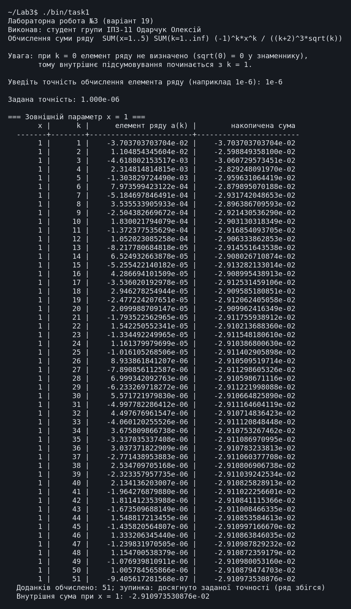
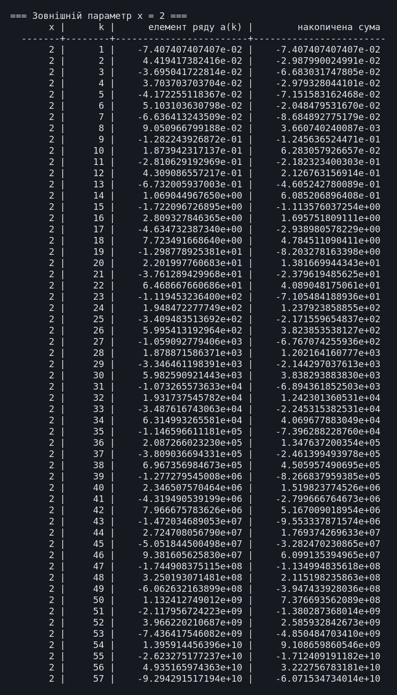
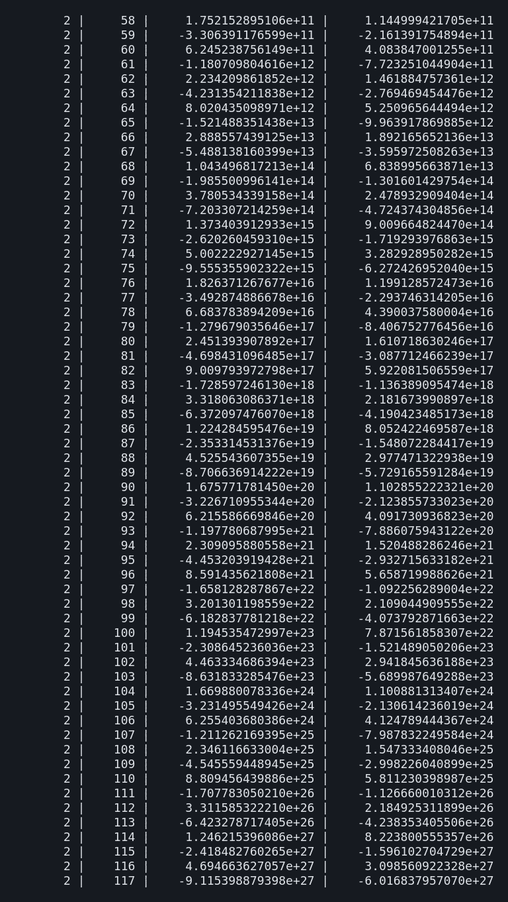
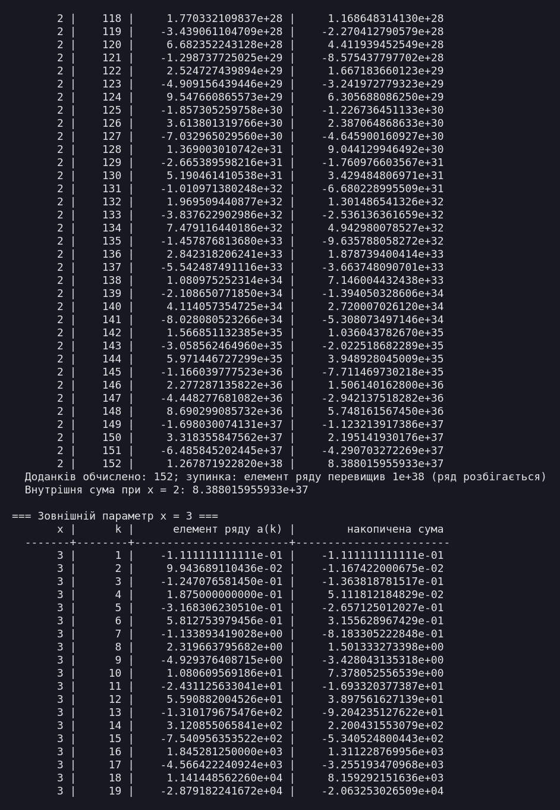
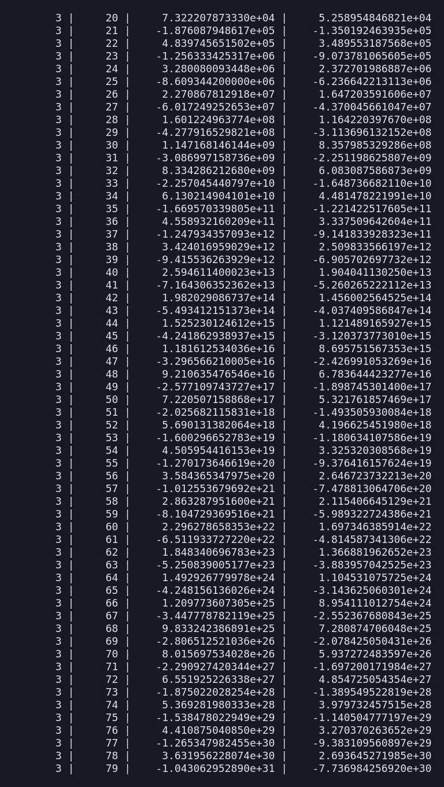
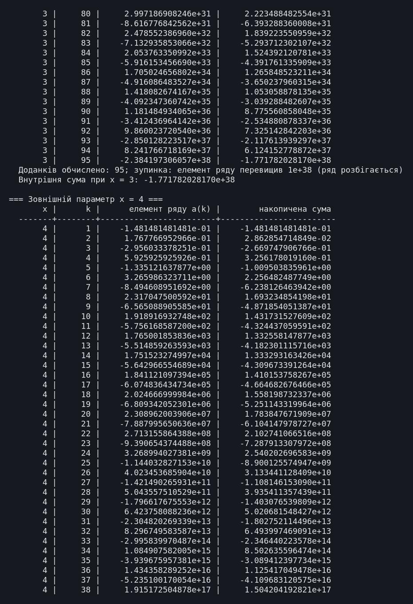
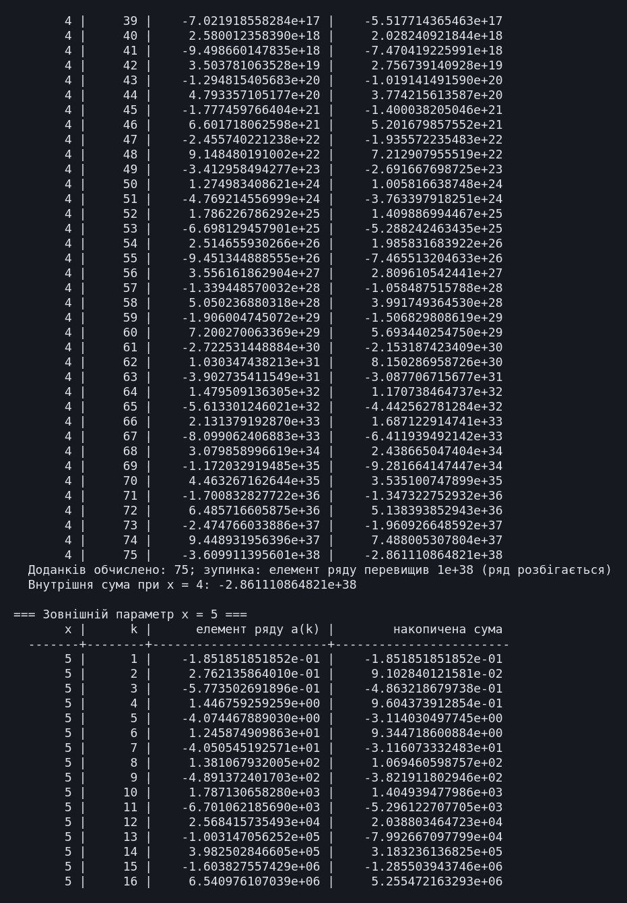
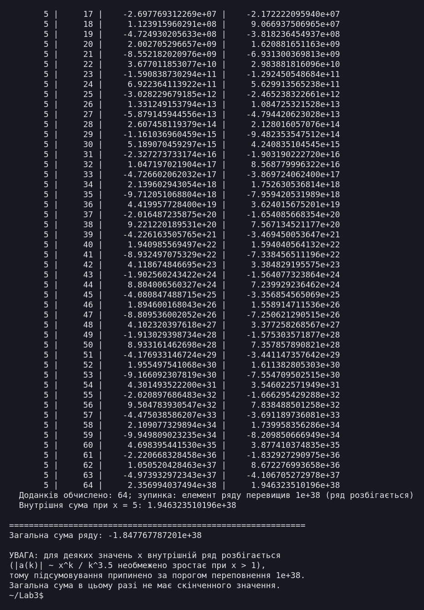
Повний протокол виконання (task1.txt) (повний протокол, 928 рядків)
7. Аналіз достовірності результатів
Достовірність результатів перевірено обчисленням суми ряду на калькуляторі та ручним розрахунком перших доданків. Для кожної контрольної величини поруч із розрахунком наведено результат програми.
Перевірка розрахунків на калькуляторі
Нижче наведено екранні копії обчислень у калькуляторі WolframAlpha; поруч із кожною - результат програми.
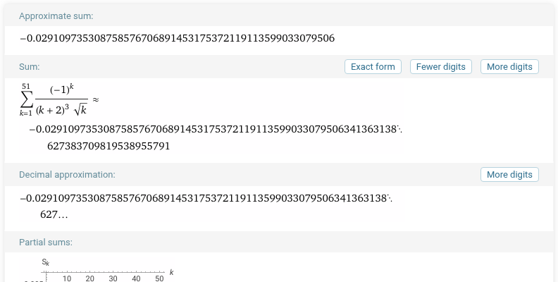
Калькулятор: -0,0291097353087585767...; програма: -2,910973530876e-02. Значення збігаються.
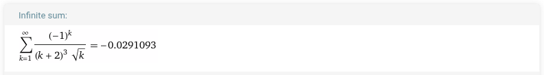
Калькулятор: -0,0291093. Програма (51 доданок): -0,0291097. Розбіжність ≈ 4·10⁻⁷ менша за задану точність 10⁻⁶: для знакозмінного ряду похибка часткової суми не перевищує модуля першого відкинутого доданка.
Перевірка перших доданків ручним розрахунком
| k | Формула a(k) при x = 1 | Ручний розрахунок | Результат програми |
|---|---|---|---|
| 1 | -1 / (3³·√1) = -1/27 | -0,0370370370 | -3,703703703704e-02 |
| 2 | +1 / (4³·√2) = 1/90,5097 | +0,0110485435 | +1,104854345604e-02 |
| 3 | -1 / (5³·√3) = -1/216,506 | -0,0046188022 | -4,618802153517e-03 |
| 4 | +1 / (6³·√4) = 1/432 | +0,0023148148 | +2,314814814815e-03 |
Доданки, отримані за рекурентним співвідношенням, збігаються з обчисленими за формулою до всіх виведених цифр.
Кількість доданків для кожного x
| x | Доданків до зупинки | Причина зупинки |
|---|---|---|
| 1 | 51 | досягнуто точності 10⁻⁶ - ряд збігся |
| 2 | 152 | елемент перевищив 10⁺³⁸ - ряд розбігається |
| 3 | 95 | елемент перевищив 10⁺³⁸ - ряд розбігається |
| 4 | 75 | елемент перевищив 10⁺³⁸ - ряд розбігається |
| 5 | 64 | елемент перевищив 10⁺³⁸ - ряд розбігається |
Кількість доданків різна для кожного x, як вимагає умова: що більше
x, то швидше зростають члени ряду і то раніше спрацьовує поріг переповнення.
Загальна сума в цьому разі скінченного значення не має, про що програма повідомляє.
8. Висновки
-
Зовнішню суму обчислено циклом
for, внутрішню - цикломdo...while. -
Елемент ряду обчислюється за рекурентним співвідношенням, без функції
pow(). - Реалізовано контроль переповнення за порогами 10⁻³⁸ і 10⁺³⁸ з виведенням причини зупинки; результати подано таблицею з чотирьох колонок.
-
Враховано особливості умови: невизначеність елемента ряду при
k = 0і розбіжність внутрішнього ряду приx > 1. - Завдання варіанта виконано в повному обсязі.